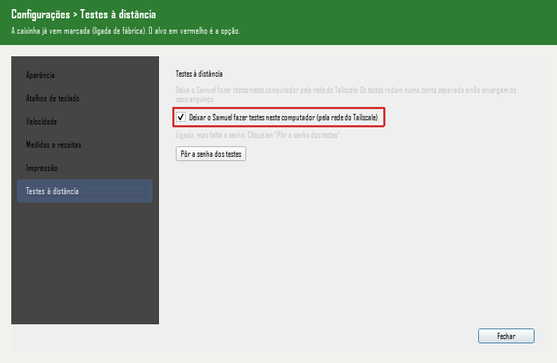
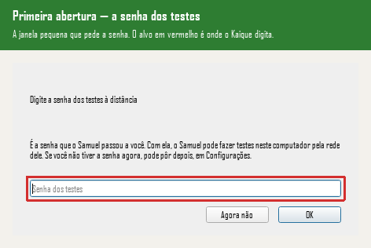

O que foi feito. Nas Configurações, entrou uma parte nova, "Testes à distância". Nela fica a caixinha "Deixar o Samuel fazer testes neste computador (pela rede do Tailscale)", que já vem marcada. Na primeira vez que o programa abre, uma janela pequena pede a senha dos testes. A parte que liga e desliga os testes no Windows ficou separada numa peça só. Nada foi feito de verdade no Windows de ninguém. Nos testes, essa peça é trocada por uma de mentira, que só anota os comandos que o programa daria.
Situação: pela metade. Parei por ordem da gerente, porque o PC ia ser desligado. A rodada do GitHub com todos os testes ainda não terminou.


| Decisão | Como foi feito | Prova |
|---|---|---|
| D-712: vem ligada de fábrica; o instalador não pergunta nada | A opção nasce ligada. O instalador não foi mexido. | test_d712_opcao_ligada_de_fabrica, test_d712_instalador_nao_pergunta_nada, print 1 |
| D-721: a janela da senha na primeira abertura; sem a senha, nada liga; a senha pode entrar depois | A janela aparece uma vez só. Sem senha, o Windows não é tocado. Depois, a senha entra pelo botão das Configurações. | test_d721_primeira_vez_pede_a_senha_e_liga, test_d721_sem_senha_nada_liga, test_p215_por_a_senha_dos_testes, print 2 |
| D-705: só pela rede do Tailscale, sem porta nova dentro do programa | O firewall fecha a porta para todos e abre só para os endereços do Tailscale, na placa de rede dele. O programa não abre porta nenhuma. | test_ligar_da_os_comandos_esperados |
| D-711: liga sozinho com o Windows e entra com senha, não com chave | O serviço fica automático. Entra com senha (PasswordAuthentication yes), e só a conta de testes pode entrar. |
test_ligar_da_os_comandos_esperados |
| D-717: conta separada, sem administrador, escondida da tela de entrada | A conta entra só no grupo Usuários e é escondida pelo registro do Windows. | test_ligar_da_os_comandos_esperados |
| Dizer "Não" ao Windows não muda nada | Nada é instalado, a opção fica desligada e aparece um aviso em português. | test_disse_nao_nada_e_instalado |
| Desligar fecha a entrada | Para o serviço, tira ele da partida do Windows, apaga a regra do firewall e desativa a conta. | test_desligar_para_o_servico_e_fecha_a_entrada |
| D-722: desfazer tudo no fim do teste (é a etapa 5) | A lista do que desfazer está pronta, mas não foi rodada. | test_desfazer_tira_a_conta_e_o_openssh |
| A senha nunca aparece no comando | No comando, a senha vai como um nome ($SenhaDosTestes). O texto da senha chega por fora. |
test_a_senha_nunca_aparece_no_comando |
| Caminho | Função |
|---|---|
| A janela da senha na primeira abertura | core.testes_a_distancia.ligar |
| A caixinha das Configurações, ao marcar | core.testes_a_distancia.ligar |
| A caixinha das Configurações, ao desmarcar | core.testes_a_distancia.desligar |
| O botão "Pôr a senha dos testes" | core.testes_a_distancia.ligar |
Todos os caminhos usam a mesma função, e os comandos saem de um lugar só
(plano_de_ligar e plano_de_desligar).
Isso fica com quem pede o teste. O programa não precisou mudar. Ao entrar de longe, a gerente
começa o comando com start "" /belownormal /wait ... para prioridade baixa, ou sem esse pedaço
para normal. O Windows passa a mesma prioridade para tudo o que esse comando abrir. Sem dizer nada,
roda em baixa.
test_decisoes_testes_a_distancia.py passou inteiro (11 de 11).
test_configuracoes_em_partes.py passou (2 de 2). O test_promessas.py foi parado no meio por
ordem da gerente, e o resultado dele não se sabe.Nenhum achado.
Do que se trata: o que acontece com a conta de testes escondida e com o comando de longe quando o programa for tirado do notebook do Kaique. Como está hoje: não há decisão. Ao tirar o programa, os dois ficariam no notebook. O que você escolhe: - (a) tirar o programa apaga a conta de testes e tira o comando de longe. A sugestão é esta, para nada escondido ficar para trás; - (b) deixar os dois como estão; - Só comentário.
Nada do que já funciona muda com essa escolha. Nesta etapa, nada foi feito nisso.
Editor de Impressão · gerado em 16/11/2026 às 11:26